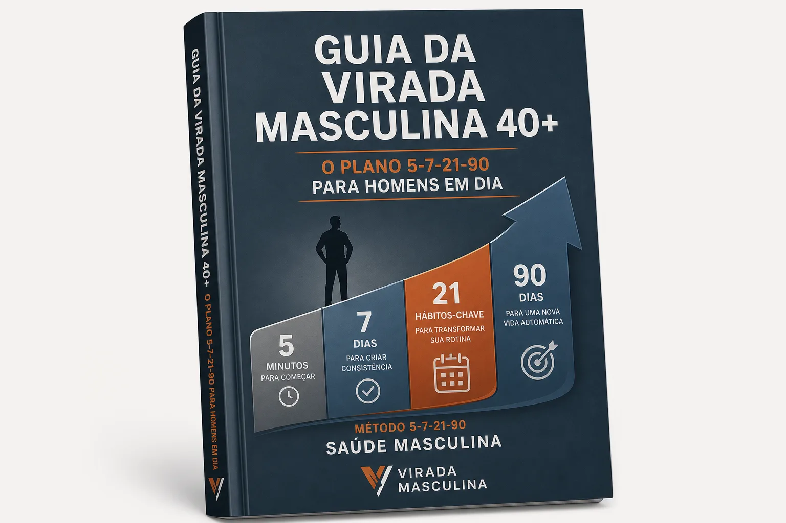
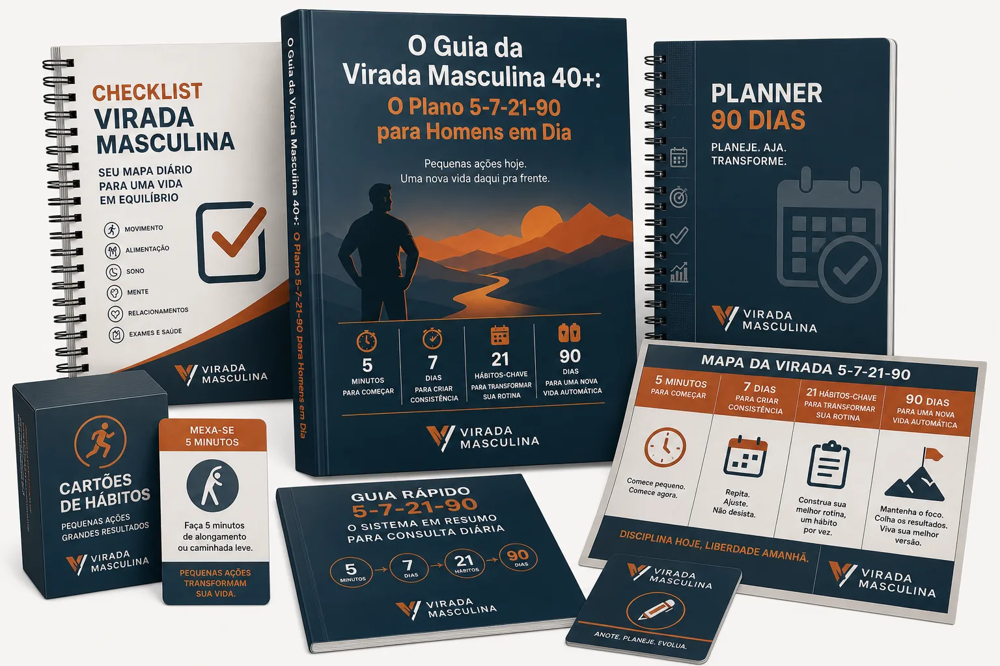
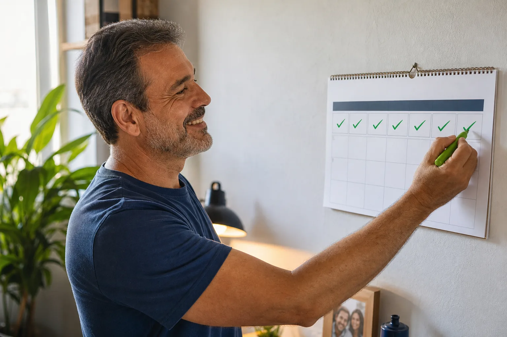
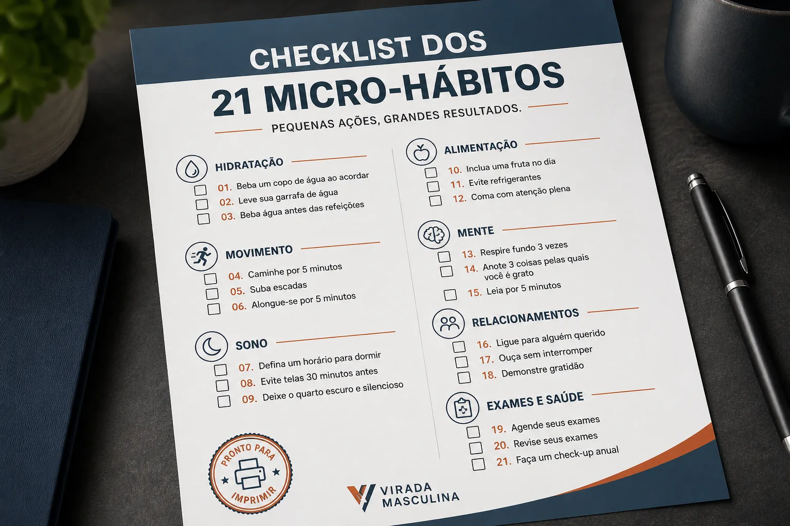
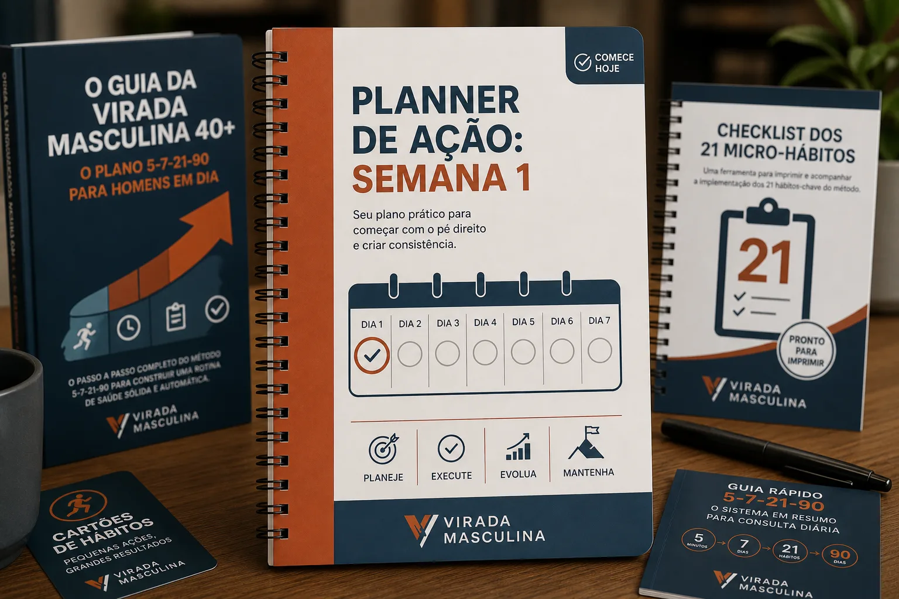
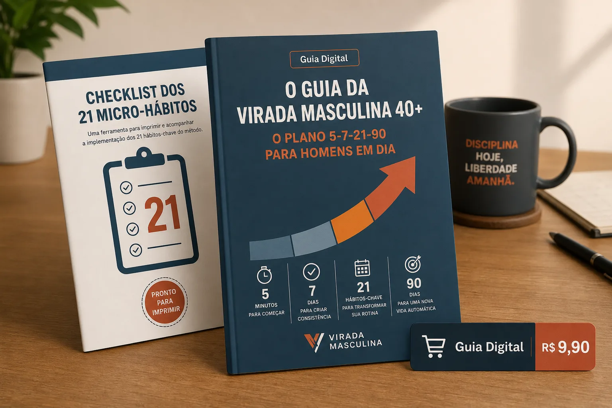
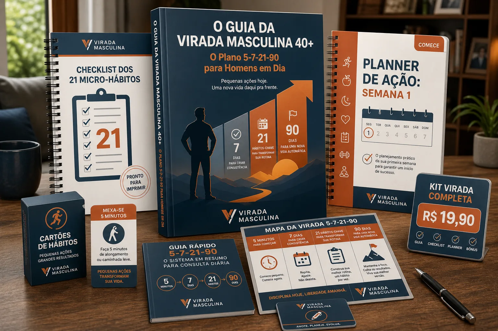

Guia da Virada Masculina 40+
O guia completo com o passo a passo do método 5-7-21-90, explicando a lógica por trás dos micro-hábitos e como aplicá-los.
Saúde Masculina em Foco

O Guia da Virada Masculina 40+ oferece um plano simples, com Checklist e Planner, para você construir sua rotina em 5 minutos.
Quero começar com 5 minutos por diaAcesso imediato. Compra 100% segura.
A rotina do trabalho e da família consome todo o seu tempo e energia. A ideia de começar uma dieta ou ir para a academia parece um esforço gigante e você acaba adiando, mesmo sabendo que precisa se cuidar. A preocupação com os exames e a falta de disposição só aumentam, mas por onde começar?
Metas radicais, dietas restritivas e a obrigação de ir à academia. Resultado: frustração e desistência em poucos dias.
Comece com apenas 5 minutos por dia, construindo micro-hábitos que se tornam automáticos e sustentáveis a longo prazo.
Descubra ações de 5 minutos que você pode fazer hoje mesmo para quebrar a inércia e dar o primeiro passo sem esforço.

Siga um plano guiado para a primeira semana, transformando as pequenas ações diárias em um hábito consistente e gratificante.
Implemente os 21 micro-hábitos essenciais para a saúde do homem 40+, cobrindo áreas como movimento, nutrição básica e mente.
Entenda como manter e expandir sua nova rotina pelos próximos 90 dias, garantindo que a mudança seja permanente e automática.

O guia completo com o passo a passo do método 5-7-21-90, explicando a lógica por trás dos micro-hábitos e como aplicá-los.

Uma ferramenta prática para imprimir e acompanhar sua evolução diária, garantindo que você não se perca no processo.

Seu mapa para os primeiros 7 dias. Saiba exatamente o que fazer a cada dia para construir o hábito da consistência.
Sempre achei que cuidar da saúde depois dos 40 era só pra quem tinha tempo e dinheiro sobrando. Esse guia me mostrou que não. Com 5 minutos por dia, consegui encaixar hábitos que fizeram uma diferença gigante na minha energia. Acabou aquela moleza da tarde.
Eu estava com medo de ir ao médico, mas mais medo ainda de não saber por onde começar. O Método 5-7-21-90 foi o pontapé que eu precisava. É prático, sem complicação, e me deu a confiança pra retomar as rédeas da minha saúde. Me sinto mais leve e disposto pra curtir meus filhos.
Pra ser sincero, por R$19,90, eu não esperava muito. Mas me surpreendi! O guia é direto ao ponto, sem enrolação. O checklist e o planner são super úteis pra colocar em prática na hora. Melhor investimento que fiz na minha saúde ultimamente.

19,90
R$ 9,90

R$ 37,00
R$ 19,90
Você tem 7 dias de garantia incondicional. Se você ler o guia e não achar que este é o ponto de partida mais simples e direto para cuidar da sua saúde, basta nos enviar um e-mail para ter 100% do seu dinheiro de volta. Sem letras miúdas e sem burocracia.
Acesso imediato por apenas R$ 19,90.
Espere! Uma oferta especial.
Só o guia já é um ótimo começo, mas com as ferramentas de acompanhamento, suas chances de sucesso são muito maiores. Leve o kit completo agora mesmo.
Kit Virada Completa (Upgrade)
R$ 19,90R$ 14,90